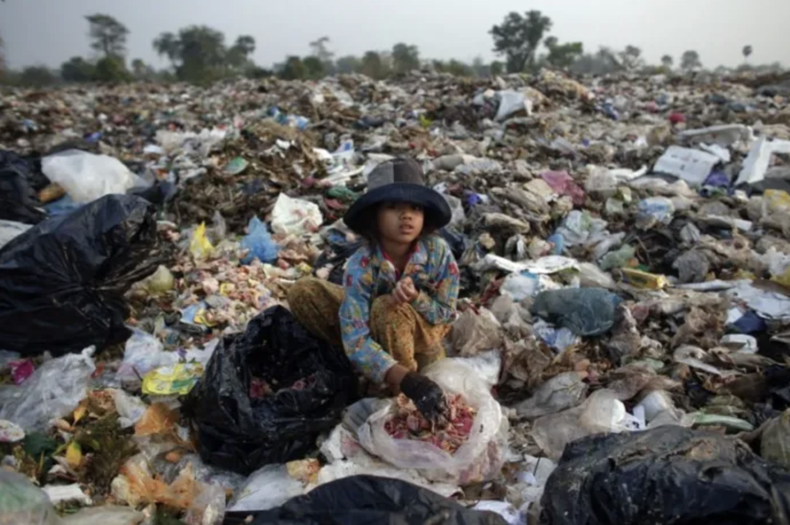
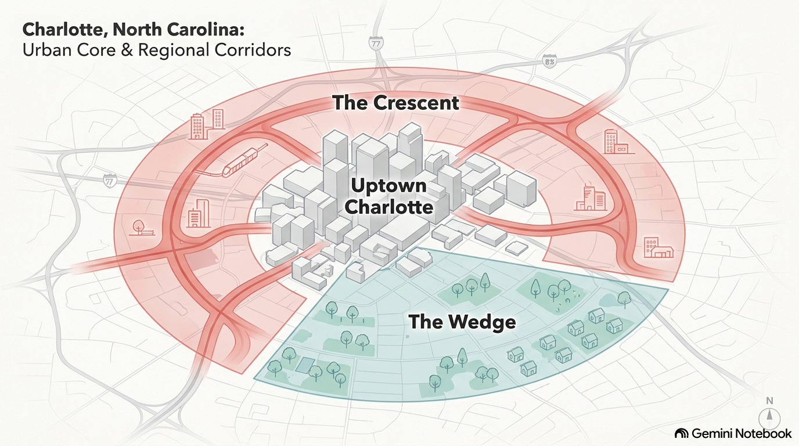

Recruiting Uptown Kitchens to Bridge Charlotte's Food Divide
The main purpose of this platform is to recruit Downtown (Uptown) Charlotte food service operators—specifically independent restaurants, bakeries, cafeterias, and hotel catering kitchens—into a local surplus food-recovery program inspired by the "Too Good To Go" model. We act as a direct digital bridge between commercial food overproduction in Uptown Charlotte and surrounding urban hunger by creating a real-time marketplace where businesses can list overstock and end-of-day surplus at deep discounts or for free.
Uptown hospitality operators work under demanding labor schedules, strict health codes, and unpredictable daily customer traffic. At the same time, local culinary leaders place high value on brand reputation, kitchen sustainability, waste reduction, and corporate social responsibility. Participating in this recovery network alleviates closing-time operational realities—minimizing waste disposal fees while framing food recovery as an essential step of culinary craft and respecting the ingredients rather than extra labor for charity.
Agile Same-Day Recovery Over Bulk Warehousing
Traditional food banks rely on industrial warehousing, bulk storage, and strict scheduled distribution, which is ineffective at redistributing small-batch, highly perishable food surplus from downtown restaurants, bakeries, and cafes before they spoil (Zuckerman 6, 11). Research by Colleen Hammelman and Dylan Turner shows that smaller-scale, digitally agile distribution efforts work far more effectively for local communities (100).
Backed by University Scholarship & Federal Law
Built on peer-reviewed food-systems research from UNC Charlotte and Duke University, our model embeds legal protections under the federal Bill Emerson Good Samaritan Food Donation Act—giving Uptown kitchen managers institutional credibility and liability assurance when redirecting wholesome end-of-day surplus to local residents.
Bridging Charlotte's Crescent vs. Wedge Divide
In a city divided between the affluent "Wedge" and the historically marginalized "Crescent" framing Uptown, progressive hospitality partners are stepping forward to ensure that fresh, commercial-kitchen meals nourish working families and children rather than ending up in landfills (Zuckerman 8, 10).
The Charlotte Paradox: Infrastructure Gaps vs. Local Hunger
Use the buttons below to compare countywide hunger data with child and transit barriers in Mecklenburg County.69% of local food security stakeholders view Charlotte's current emergency food infrastructure as insufficient for long-term support options for families (Zuckerman 11). While Second Harvest Food Bank of Metrolina distributes 94 million pounds annually and Community Food Rescue collects 10.5 million pounds from large retail donors, wholesale warehousing cannot capture small, same-day perishable batches from Uptown restaurants, bakeries, and cafes before they spoil (Zuckerman 6).
Between 12% and 15% of Mecklenburg County households—over 120,000 people—struggle with consistent access to adequate nutrition, while North Carolina consistently ranks as the 10th hungriest state nationwide (Zuckerman 6; Charlotte-Mecklenburg Food Policy Council 60; McManimon; Rogers).

Explore the Structural History or Review Kitchen Onboarding
Learn how spatial segregation shaped Charlotte's food landscape, or review our step-by-step onboarding guide for Uptown kitchens.
The Root Issue: History, Spatial Segregation, and Community Impact
Food insecurity across Charlotte and Mecklenburg County isn't merely a regional deficit in food supply, but a profound structural issue rooted in discrimination. Despite Charlotte's standing as one of the fastest-growing metropolitan areas in the United States, between 12% and 15% of Mecklenburg County households—over 120,000 people—struggle with consistent access to adequate nutrition (Zuckerman 6; Charlotte-Mecklenburg Food Policy Council 60). While Charlotte's overall food insecurity rate roughly mirrors national averages, the numbers depicting families with children are alarmingly high: over 33% of local households with children experience food insecurity, compared to the 19% national average (Charlotte-Mecklenburg Food Policy Council 63). Overall, North Carolina consistently ranks as the 10th hungriest state nationwide, with food insecurity rates far surpassing national averages (McManimon; Rogers).
This deprivation exists directly alongside many commercial food stores. Downtown (Uptown) Charlotte has a dense concentration of restaurants, grocery stores, and convention venues that create mass amounts of food surplus daily. Because of constantly changing consumer traffic, visible imperfections, and strict food sell-by timelines, these commercial kitchens regularly discard good food as waste. This creates a painful paradox of acute hunger and diet-related health complications, sitting right next to commercial centers dumping edible surplus into landfills.

Systemic Segregation, Urban Renewal, and Food Apartheid
The food insecurity rates in Charlotte aren't simply a byproduct of the local economy, but a direct legacy of systemic racial segregation, exclusionary zoning, and discriminatory municipal planning. Over decades, local government and corporate real estate built up the isolation that divided Charlotte into two distinct areas: the affluent, predominantly White "Wedge" in South Charlotte, and the historically marginalized "Crescent" circling the downtown of North, West, and East Charlotte (Zuckerman 8; Hammelman and Turner 100).
This was brought about around the mid-twentieth-century federal policy of "urban renewal" that was established under the Housing Act of 1949, lasting through the 1950s and early 1960s. In Charlotte, municipal redevelopment programs cleared out and destroyed historic, self-sustaining African American communities near Downtown to make way for commercial expansion, higher-class housing, and infrastructure—a policy novelist James Baldwin famously dubbed "Negro Removal" in the 1960s (Zuckerman 10). Because residential property and land ownership represent the primary way to accumulate generational wealth in the United States, the physical destruction and displacement of these neighborhoods ruined community equity and contributed to the appalling 13:1 wealth gap between White and Black residents in Charlotte (Zuckerman 10).
This spatial segregation is a consistent trend in modern Mecklenburg County food and poverty statistics:
- Demographics of Low-Access Census Blocks: In Mecklenburg County census block groups designated as lacking full-service grocery stores, 57% to 59% of residents are Black (African American) and 12% to 17% are Hispanic (Zuckerman 10).
- Disproportionate Family Poverty Rates: Poverty rates for Black families (19.9%) and Hispanic families (28.0%) in Mecklenburg County far exceed those of White families (3.7%) (Zuckerman 7).
- Food Apartheid vs. "Food Desert": Dr. Nicole Peterson of UNC Charlotte notes that the layman term "food desert" is fundamentally flawed because it implies something that is a naturally occurring ecological condition; instead, most scholars and community advocates name this reality as a food apartheid—the institutionalized, intentional lack of investment in low-income neighborhoods and communities of color (Zuckerman 10; Rogers). As huge corporate supermarkets migrated to the affluent White suburbs, historically Black communities like West Boulevard and Beatties Ford Road were left abandoned, leaving residents with mainly convenience stores and fast-food chains while draining millions of retail food dollars out of community grocery stores (Charlotte-Mecklenburg Food Policy Council 84).
Transportation Barriers, Gentrification, and Health Consequences
The physical geography of Downtown Charlotte only adds to these racial and economic fault lines through transportation barriers. According to the Charlotte-Mecklenburg Food Policy Council, approximately three-quarters of county residents are required to travel over a mile to reach their primary grocery store (71). For low-income households in the Crescent who lack personal vehicles, getting nutritious groceries turns into a monumental task of navigating multiple public transit options all while carrying heavy bags, making grocery shopping a burdensome, time-consuming task (Charlotte-Mecklenburg Food Policy Council 70; Rogers).
At the same time, rapid gentrification of local areas has inflated real estate values and commercial rents. As large corporate redevelopments and luxury high-rises expand across Uptown, affordable independent grocery stores have been displaced, leaving instead high-end eateries and specialty grocery stores targeting affluent commuters. Low-income families in adjacent neighborhoods are physically close to these food sources, yet financially excluded. Surrounded by convenience stores and fast-food franchises offering calorically dense, shelf-stable items, local residents face alarming numbers of elevated health risks: 61% of Mecklenburg County adults are overweight or obese, and diet-related chronic conditions such as diabetes and hypertension are heavily concentrated along Crescent communities (Charlotte-Mecklenburg Food Policy Council 8; Zuckerman 7).
Current Emergency Help, the SNAP "Cliff Effect," and Why Hyper-Local Recovery Matters
Why Wholesale Food Relief & Federal Aid Leave Gaps
Charlotte has an expansive food support and emergency feeding network. Second Harvest Food Bank of Metrolina operates on a regional scale that distributes 94 million pounds of food annually across 24 counties ("Charlotte Food Bank Reports Record for Families"; Zuckerman 6). Under its Community Food Rescue (CFR) initiative, refrigerated trucks collect around 10.5 million pounds of perishable items directly from large retail donors for distribution to 36 feeding non-profits, while organizations like Nourish Up (formerly Loaves & Fishes/Friendship Trays) deliver groceries and prepared meals directly to seniors and crisis-affected families (McManimon).
Despite these charitable efforts, traditional food banks rely on industrial warehousing, bulk storage, and strict scheduled distribution—which is ineffective at redistributing small-batch, highly perishable food surplus from downtown restaurants, bakeries, and cafes before they spoil. A recent stakeholder assessment revealed that 69% of local food security stakeholders view the current system and infrastructure as insufficient for long-term support options for families (Zuckerman 11). Meanwhile, working households earning between 130% and 185% of the Federal Poverty Level face what is known as the "cliff effect"—they earn too much to qualify for federal programs like SNAP and FNS, yet lack the income to afford full-price food in Charlotte's inflating market (Charlotte-Mecklenburg Food Policy Council 62; Delia; Gaddy and Morrell).
How This Platform Benefits the Charlotte Community
Research by Colleen Hammelman and Dylan Turner demonstrates that smaller-scale distribution efforts and digitally agile adaptations work more effectively for local communities than rigid wholesale logistics alone (100). Grounded in Jennifer Zuckerman's recommendation on shifting from emergency charity to dignified community access (11), our hyper-local surplus recovery platform benefits Charlotte in three concrete ways:
- Dignified Community Access: Families—including working households caught in the 130%–185% SNAP gap—gain affordable or free access to fresh, restaurant-quality meals without bureaucratic stigma or long warehouse wait times.
- Same-Day Perishable Rescue: Commercial kitchens in Uptown list unsold food at the end of service so perishable batches reach nearby residents within hours instead of spoiling in landfills.
- Environmental & Civic Stewardship: Redirecting edible surplus reduces commercial landfill waste and strengthens neighborhood solidarity between Uptown hospitality leaders and Crescent residents.
Business Sign In & Kitchen Onboarding
We designed Queen City Surplus Bridge specifically for Uptown Charlotte independent restaurant owners, bakery operators, hotel food-and-beverage companies, and catering kitchens. Participation requires zero long-term contracts, zero extra delivery staffing, and minimal closing-time effort.
Three-Step Kitchen Onboarding Guide
- Verify Your Uptown Kitchen Profile: Confirm your business name, kitchen category (independent restaurant, bakery/cafe, hotel food & beverage, or catering kitchen), and Uptown street location during pilot onboarding.
- Publish End-of-Day Surplus in Two Minutes: Near closing, list your unsold portions—either as free community-sponsored bundles or at a discounted recovery price—and set a convenient counter pickup window.
- Verify Counter Pickup & Showcase Your Impact: Neighbors pick up directly at your counter during your scheduled window, turning closing-time surplus into community goodwill without requiring warehouse storage or delivery drivers.
Kitchen Surplus & Cost Recovery Calculator
The interactive recovery calculator is intentionally disabled during this pilot phase so that no unverified financial savings or waste-diversion numbers are displayed.
Once participating Uptown kitchens establish baseline closing logs, verified surplus bundle counts and waste-diversion metrics will be tracked directly from confirmed partner listings.
Kitchen Partner Sign In & Registration
Automated account sign-in and self-service registration forms are currently offline while our Uptown Charlotte pilot cohort is being established.
Prospective Uptown restaurant, bakery, hotel, and catering partners can review our onboarding steps above and prepare their preferred end-of-day counter pickup window for launch.
Federal Liability Protection & Food Safety Assurance (Ethos)
Partnering commercial kitchens are protected under the federal Bill Emerson Good Samaritan Food Donation Act, which shields businesses from civil and criminal liability when donating apparently wholesome food in good faith to community food-recovery initiatives. Participating kitchens maintain standard Mecklenburg County cold-chain and food-handling protocols throughout their designated end-of-day pickup windows.
Find Surplus Food Near You
Built for working households caught in the 130%–185% Federal Poverty Level "cliff effect" and Charlotte neighbors seeking fresh, affordable meals without long transit trips (Charlotte-Mecklenburg Food Policy Council 62, 71; Gaddy and Morrell). When partner kitchens publish end-of-day surplus, community members can claim available bundles directly at the counter—shifting from emergency charity to dignified community access (Zuckerman 11).
| Partner Kitchen & Location | Surplus Bundle Description | Pickup Window | Pricing |
|---|---|---|---|
|
No Active Kitchen Surplus Bundles Posted Yet
To maintain complete transparency and accuracy, placeholder listings are never displayed on this board. Verified end-of-day food bundles from Uptown Charlotte restaurants, bakeries, and cafes will appear here once participating kitchens complete pilot onboarding. |
|||
Dignified Access Without Eligibility Paperwork
Unlike traditional emergency pantries that rely on fixed warehouse schedules or income cutoffs that exclude working families earning 130%–185% of the Federal Poverty Level, this marketplace connects neighbors directly to fresh, restaurant-prepared food at free or deeply discounted prices (Zuckerman 11; Gaddy and Morrell).
Convenient Uptown & Transit-Accessible Pickups
With approximately three-quarters of Mecklenburg County residents traveling over a mile to reach a primary grocery store, locating surplus pickups along Uptown and transit corridors reduces burdensome multi-transfer bus trips for Crescent families (Charlotte-Mecklenburg Food Policy Council 70–71; Rogers).
Sources & Works Cited
All statistics, historical context, and policy analyses presented across Queen City Surplus Bridge are drawn exclusively from the peer-reviewed studies, institutional food-system assessments, and Charlotte journalism cited below:
"Charlotte Food Bank Reports Record for Families." 105.3 RnB, 2 Oct. 2026.
Charlotte-Mecklenburg Food Policy Council. State of the Plate: Charlotte-Mecklenburg Food System Assessment. Charlotte-Mecklenburg Food Policy Council, 2015.
Delia, Sarah. "Solutions for Food Insecurity in the Mecklenburg County and Beyond." WFAE 90.7 - Charlotte's NPR News Source, 15 Apr. 2024.
Feeding America. "Child Hunger & Poverty in Mecklenburg County, North Carolina." Map the Meal Gap, Feeding America, 2026.
Gaddy, Mia, and Liz Morrell. "Closing the (SNAP) Gap." Charlotte Urban Institute, University of North Carolina at Charlotte, 16 Apr. 2026.
Hammelman, Colleen, and Dylan Turner. "Adaptations and Innovations: Analyzing Food System Organizations' Responses to the COVID-19 Pandemic." Journal of Agriculture, Food Systems, and Community Development, vol. 12, no. 1, 2022, pp. 95-114.
McManimon, R. "The Queen's Dilemma: Food Distribution in the Piedmont Foodshed." UNC Charlotte Department of History, 2019.
Rogers, Amy. "WFAEats: Why Are People Hungry In Charlotte?" WFAE 90.7 - Charlotte's NPR News Source, 23 Aug. 2019.
Second Harvest Food Bank of Metrolina. "Hunger Statistics." Second Harvest Food Bank of Metrolina, 2026.
Zuckerman, Jennifer. Charlotte Food & Social Mobility Summit Report & Recommendations. Duke World Food Policy Center, 2019.
How These Sources Inform This Website
- Hammelman & Turner (2022): Establishes how smaller-scale, digitally agile distribution models work more effectively for local communities than rigid wholesale logistics alone (100).
- Charlotte-Mecklenburg Food Policy Council (2015): Documents the 12%–15% household food insecurity rate, the 33%+ rate among households with children, the 75% one-mile grocery transit barrier, the 61% adult overweight/obesity rate, and disinvestment along West Boulevard and Beatties Ford Road (8, 60–84).
- Zuckerman / Duke World Food Policy Center (2019): Connects Charlotte's Crescent vs. Wedge divide and 13:1 racial wealth gap to 1950s–1960s urban renewal, highlights Dr. Nicole Peterson's scholarship on food apartheid, notes that 69% of stakeholders view emergency infrastructure as insufficient, and advocates shifting from emergency charity to dignified community access (6–11).
- Gaddy & Morrell (2026) and Delia (2024): Examines the 130%–185% Federal Poverty Level SNAP "cliff effect" facing working households across Mecklenburg County.